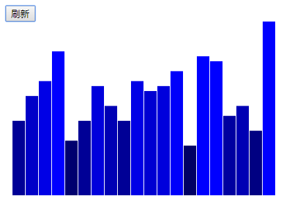
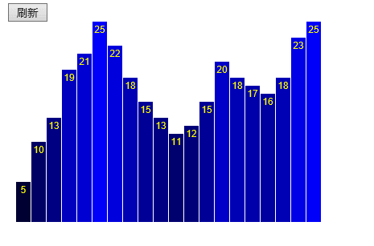

从D3.js到DC.js基础教程
版权：中国石油大学（华东）可视分析小组
一、简介
D3.js的特点
D3全称Data-Driven Documents。D3.js是一个基于数据处理文档的JavaScript库。D3帮助您通过使用HTML、SVG和CSS将生活中的数据鲜活形象的表现出来。D3严格遵循web标准，因而可以让你的程序轻松兼容现代主流浏览器并避免特定框架的依赖。同时，它提供了强大的可视化组件，可以让使用者以数据驱动的方式去操作DOM。
优点：（1）数据能够与DOM绑定在一起。 D3能够将数据与DOM绑定在一起，使得数据与图形成为一个整体，即图形中有数据、数据中有图形。那么在生成图形或更改图形时，就可以方便的根据数据进行操作。并且，当数据更改之后，图形的更新也会很方便。 （2）数据转换和绘制是独立的。 将数据变成图表，需要不少数学算法，一些可视化库的做法是：提供一个函数drawPie(),输入数据，直接绘制出饼状图。 D3的做法是：提供一个函数computePie()，可将数据转换成饼状图数据，然后开发者使用自己喜欢的方式来绘制饼状图，将两者分开的方式，极大地提高了自由度，以至于开发者甚至可以使用其他的图形库来显示D3计算的数据。 （3）代码简洁。使用链式语法，能够一个函数套一个函数，使得代码很简洁。 （4）大量布局。D3将大量复杂的算法封装成一个个布局，能够适用于各种图表的制作。 （5）基于SVG，缩放不会损失精度。 SVG是可缩放的矢量图形。D3大部分是在SVG上绘制的，并且提供了大量的图形生成器，使得在SVG上绘制图形变得简单，又由于SVG是矢量图，所以放大缩小不会有精度损失。 （6）由于开销很小，D3非常快，支持大型数据集和动态行为，用于交互和动画。D3的功能风格允许通过不同的官方和社区开发的模块进行代码重用。
缺点：虽然D3.js能够制作很酷的图形，但它不是一个图形库。D3.js将建立和操作协调系统、坐标轴和形状，但是它不知道什么是柱状图或者饼图。
DC.js的特点
（1）dc.js是一个JavaScript绘图库，带有本地的crossfilter支持，允许对大型多维数据进行高效的探索。它利用d3来以css友好的SVG格式呈现图表。使用dc.js来呈现的图表是数据驱动和反应性的，因此为用户交互提供即使反馈。 （2）dc.js是一 个简单而又强大的javascript库，用于在浏览器和移动设备上进行数据可视化和分析。 （3）dc.js定义了线形图、条形图、饼形图，并且可以通过使用D3.js的对象来建立它们。使之更容易专注于你想要显示的东西，而不是显示本身。

Adil Moujahid写了一篇关于如何使用dc.js的基础教程，其中的结果如上图所示。
因此，如果能将D3.js封装成DC.js的chart，可以将二者的优点进行结合，构建一个web端的可视化框架。本文从构建一个d3.js的barchart开始，一步步将其封装成DC.js的一个chart。
二、构建一个简易的BarChart
(1) 准备数据集
AخA1var dataset = [ 5, 10, 13, 19, 21, 25, 22, 18, 15, 13,11, 12, 15, 20, 18, 17, 16, 18, 23, 25 ];(2) 设置SVG的高宽
xxxxxxxxxx21var w=600;2var h=250; (3) 定义比例尺
xxxxxxxxxx61var xScale=d3.scale.ordinal()// x是序数比例尺2 .domain(d3.range(dataset.length)) 3 .rangeRoundBands([0,w],0.05); 4var yScale=d3.scale.linear()// y是线性比例尺5 .domain([0,d3.max(dataset)])//定义域6 .range([0,h]);//值域scale的英文含义是缩放。在d3中，主要将数据从一个范围映射到另外一个范围。如yScale所示，将0到dataset中最大值范围内的数据映射到svg的高度范围内。注意这里得到的yScale是一个函数，例如yScale(5)得到的就是5对应的高度。domain指定了这个函数的定义域，range定义了这个函数的值域，linear指定了映射的方式为线性，由这3个参数yScale获知了如何将一个数值从定义域映射到值域。
xScale是一个序数比例尺，将定义域的数据一对一的映射到值域。domain(d3.range(dataset.length))指明数据一个有dataset.length个， 在本文的例子中为20个；rangeRoundBands()有三个参数：interval、padding、outPadding，分别表示范围、内部的空白参数以及边界的空白参数，后面两个参数值默认为0。rangeRoundBands([0,w], 0.05)将svg画布从宽度上划分为20份，任意两份之间的间距是0.05，并由此计算出每份的x坐标，其中Round是将坐标进行了整数截断，保证了得到的结果为整数。如果需要使用浮点坐标为rangeBands。因此xScale(i)表示第i个元素在svg中对应的x坐标。
(4) 创建SVG元素
xxxxxxxxxx41var svg = d3.select("body")// 选中DOM中的目标元素2 .append("svg")// 为目标元素附加上一个svg子元素3 .attr("width", w)// 设置这个svg的宽4 .attr("height", h);// 设置这个svg的高本例中select了body标签，并将svg插入到body中，在实际执行时，可以将svg通过标签的id插入到指定的标签中。例如：
html中为
xxxxxxxxxx11<div id="mychart"></div>采用以下方式将svg添加到对应的div中，通过id选中标签需要在id前加#。
xxxxxxxxxx21var svg = d3.select("#mychart")// 选中DOM中的目标元素2 .append("svg")// 为目标元素附加上一个svg子元素(5) 为SVG添加条形
xxxxxxxxxx211var createChart = function(dataset){2 svg.selectAll("rect")// 选中空元素，表示即将创建这样的元素3 .data(dataset)// 绑定数组，对此后的方法都执行dataset.length次迭代4 .enter()// 数据元素值比前面选中的DOM元素多创建一个新的DOM元素5 .append("rect")// 取得enter的占位元素，并把rect追加到对应的DOM中6 .attr("x", function(d, i) {// 设置横坐标7 //return i * (w / dataset.length); // 从0开始每次右移元素宽度为(w / dataset.length)8 return xScale(i);// 这里使用序数比例尺，自己去找刚才划分好的档位9 })10 .attr("y", function(d) {// 设置纵坐标，纵坐标正方向是从上往下的，所以条有多长就要设置起点是相对于h再向上移动条长11 return h - yScale(d);12 })13 .attr("width", xScale.rangeBand())// 这里xScale比例尺已经设置间距了所以直接用14 .attr("height", function(d) {15 return yScale(d);16 })17 .attr("fill", function(d) {//设置RGB颜色与数值的关系18 return "rgb(0, 0, " + (d * 10) + ")";19 });20}21createChart(dataset);第1-21行代码是定义了一个叫做createChart的函数，第22行表示真正执行这个函数。
第2行选中所有的rect标签，此时没有添加任何的rect，所以svg下的rect为空，即数量为0。
第3行中设定了数据，在本例中数量为20个。
第4行中enter表示第2行中的数据比第1行中已有的rect的数量多出来的部分，即20-0=20。详细内容参考： enter()解释
如果原来svg中已有2个标签，那么通过enter只会选中多出来的20-2=18个rect，6-20行代码将会只对后面的18个rect进行处理。
如果原来svg中已有20个标签，那么所有标签都不会被选中，因此6-20行代码不会起任何作用。
例如：
xxxxxxxxxx41var dataset = [ 5, 10, 13, 19, 21, 25, 22, 18, 15, 13,11, 12, 15, 20, 18, 17, 16, 18, 23, 25 ];2createChart(dataset);3var dataset = [ 15, 20, 23, 29, 11, 15, 22, 18, 15, 13,11, 12, 15, 20, 18, 17, 16, 18, 23, 25 ];4createChart(dataset);将会按照第1行的数据创建20个rect，虽然在第4行中改变了数据，但是因为关键字enter的原因，在第6行createChart的执行过程中，没有rect会被选中，因此柱状图不会被更新。如果需要根据新的数据进行更新，需要采用以下的方式。
(6) 为SVG更新条形
xxxxxxxxxx201var updateChart = function(dataset){2 yScale.domain([0,d3.max(dataset)]);3 svg.selectAll("rect")// 选中空元素，表示即将创建这样的元素4 .data(dataset)// 对此后的方法都执行dataset.length次迭代5 .attr("x", function(d, i) {// 设置横坐标6 //return i * (w / dataset.length); // 从0开始每次右移元素宽那么长(w / dataset.length)7 return xScale(i);// 这里使用序数比例尺，自己去找刚才划分好的档位8 })9 .attr("y", function(d) {// 设置纵坐标，纵坐标正方向是从上往下的，所以条有多长就要设置起点是相对于h再向上移动条长10 return h - yScale(d);11 })12 .attr("width", xScale.rangeBand())// 这里xScale比例尺已经设置间距了所以直接用13 .attr("height", function(d) {14 return yScale(d);15 })16 .attr("fill", function(d) {//设置RGB颜色与数值的关系17 return "rgb(0, 0, " + (d * 10) + ")";18 });19}20updateChart(dataset);updateChart函数与createChart函数相比，最重要的是去掉了enter和append两行，它表示所有的rect都被选中，并且按照新的dataset渲染rect。第2行中的yScale.domain([0,d3.max(dataset)])是为了纵坐标的数据范围随着新的数据变化而变化。
例如：
xxxxxxxxxx41var dataset = [ 5, 10, 13, 19, 21, 25, 22, 18, 15, 13,11, 12, 15, 20, 18, 17, 16, 18, 23, 25 ];2createChart(dataset);3var dataset = [ 15, 20, 23, 29, 11, 15, 22, 18, 15, 23,21, 22, 25, 10, 28, 27, 16, 18, 13, 35 ];4updateChart(dataset);运行的结果将会是按照第3行中的dataset中的数据渲染的结果。
三、建立模板
xxxxxxxxxx141<html>2 <head>3 <meta charset="utf-8">4 <title>from d3.js to dc.js</title>5 <script type="text/javascript" src="./d3.v3.js"></script>6 </head>7 <body>8 <button id="btnRefresh">刷新</button>9 <div id="mychart"></div>10 <script>11 //前文中的所有代码12 </script>13 </body>14</html>由于是点击刷新按钮时数据进行更新，所以在script标签中要加上交互操作
xxxxxxxxxx41d3.select("#btnRefresh")2 .on("click",function(){3 updateChart(dataset);4 });结果参照样例1，显示效果如下：

四、数据的动态更新
为了展现数据的动态变化，我们建立createDB函数随机生成新的的数据。
xxxxxxxxxx91var createDB = function(numValues){2 dataset=[];3 var maxValue=100;4 for(var i=0;i<numValues;i++){5 var newNumber=Math.floor(Math.random()*maxValue);//0-100的整数6 dataset.push(newNumber);7 }8 return dataset;9}将更新过程添加到按钮的点击响应中。每次点击刷新按钮，柱状图都会因为数据的变化而变化。其中，Math.floor(Math.random()*maxValue)表示返回0到maxValue之间的随机数。
xxxxxxxxxx51d3.select("#btnRefresh")2 .on("click",function(){3 dataset = createDB(dataset.length);4 updateChart(dataset);5 });可以尝试将上述代码第4行中的updateChart改成createChart，柱状图不会有任何变化。
五、DC.JS基本结构
任意一个DC.JS的chart，必须满足以下基本结构
xxxxxxxxxx121dc.chartname = function (parent, chartGroup) {2 var _chart = dc.baseMixin({});3 _chart._doRender = function () {4 console.log("render");5 return _chart;6 }7 _chart._doRedraw = function() {8 console.log("redraw");9 return _chart;10 }11 return _chart.anchor(parent, chartGroup);12};其中chartname可以自行定制。_chart是DC.JS中的一个或几个Mixin构成的基本结构。baseMixin是所有DC.JS中的根。
_doRender函数在chart被构建时调用，而_doRedraw在chart需要被刷新时调用。例如当同时存在几个chart，其中一个chart影响到其他chart时，chart将会被刷新。
_chart.anchor(parent, chartGroup);是将这个chart注册到现有的chart的group中。
六、封装一个DC.JS的bar chart
xxxxxxxxxx461dc.lxBarChart = function (parent, chartGroup) {2 var _chart = dc.baseMixin({});3 var _g,xScale,yScale;4 _chart._doRender = function () {5 _chart.resetSvg();6 _g = _chart.svg().append('g');7 xScale = d3.scale.ordinal()8 .domain(d3.range(dataset.length))9 .rangeRoundBands([0, _chart.width()], 0.05);//_chart.width()是svg画布的宽度10 yScale = d3.scale.linear()11 .domain([0, d3.max(dataset)])12 .range([0, _chart.height()]);//_chart.height()是svg画布的高度13 drawChart();14 return _chart;15 };16 _chart._doRedraw = function () {17 drawChart();18 return _chart;19 };20 var drawRars= function (bars) {//将createChart和updateChart的重复部分合并成一个函数21 bars22 .attr("x", function (d, i) { return xScale(i); })23 .attr("y", function (d) { return _chart.height() - yScale(d);})//这里使用了height24 .attr("width", xScale.rangeBand())25 .attr("height", function (d) { return yScale(d); })26 .attr("fill", function (d) { return "rgb(0, 0, " + (d * 10) + ")"; });27 };28 var createChart = function () {29 var bars = _g.selectAll("rect")30 .data(_chart.dimension())//将dimension作为数据源31 .enter()32 .append("rect");33 drawRars(bars);34 };35 var updateChart = function () {36 yScale.domain([0, d3.max(_chart.dimension())]);//求dimension中的最大值37 var bars = _g.selectAll("rect")// 选中空元素，表示即将创建这样的元素38 .data(_chart.dimension());//将dimension作为数据源39 drawRars(bars);40 };41 var drawChart = function () {42 createChart();43 updateChart();44 };45 return _chart.anchor(parent, chartGroup);46};以上代码将原来d3画的barchart封装成一个dc的类。其中的宽度和高度直接调用_chart的对应函数获取。而数据源改成了_chart的dimension函数。
七、将新的chart添加到模板中
xxxxxxxxxx221var barchart = dc.lxBarChart("#mychart");2barchart3 .width(400)4 .height(250)5 .group({})6 .dimension(dataset);//将dataset作为dimension7var createDB = function(numValues){8 dataset=[];9 var maxValue=100;10 for(var i=0;i<numValues;i++){11 var newNumber=Math.floor(Math.random()*maxValue);//0-100的整数12 dataset.push(newNumber);13 }14 return dataset;15}16d3.select("#btnRefresh")17 .on("click",function(){18 dataset = createDB(dataset.length);//建立新的数据集19 barchart.dimension(dataset);//将新数据集传递给barchart20 barchart.redraw();//调用_doRedraw重绘21 });22dc.renderAll();//渲染dc中所有的chart第1行将新的chart控件与mychart这个div进行绑定，同时在dc中进行了注册。第3-4行设置了svg的宽度和高度。group和dimension是dc中chart必须设定的两个函数，但是本例中没有用group，因此将其设置为空。将dataset作为了新chart的dimension，在chart的绘制过程中作为数据源使用。
在第19行重新设置了barchart的数据源，并在第20行进行了重绘。
第22行渲染了当前dc中所有的chart。
八、添加过渡效果
xxxxxxxxxx121var updateChart = function () {2 yScale.domain([0, d3.max(_chart.dimension())]);//求dimension中的最大值3 var bars = _g.selectAll("rect")// 选中空元素，表示即将创建这样的元素4 .data(_chart.dimension())//将dimension作为数据源5 .transition()//(9)加上过渡动画6 .delay(function(d,i){7 return i/_chart.dimension().length*1000;8 })//指定过度什么时间开始，可以用函数控制每一条的动画时间，这样就可得到钢琴版的效果9 .duration(2000)//(10)加上动画的持续时间，以毫秒计算10 .ease("linear");//(11)缓动函数：有circle（加速）elastic（伸缩），linear（匀速），bounce（弹跳）11 drawRars(bars);12};添加第5-9行代码产生过渡效果。
九、添加数值
xxxxxxxxxx341 var drawText = function (texts) {2 texts3 .text(function(d) { return d; })4 .attr("text-anchor", "middle")5 .attr("x", function(d, i) { return xScale(i)+xScale.rangeBand()/2; })6 .attr("y", function(d) { return _chart.height() - yScale(d) + 14; })7 .attr("font-family", "sans-serif")8 .attr("font-size", "12px")9 .attr("fill", "yellow");10};11var createText = function () {12 var texts = _g.selectAll("text")13 .data(_chart.dimension())//将dimension作为数据源14 .enter()15 .append("text");16 drawText(texts);17};18var updateText = function () {19 var texts = _g.selectAll("text")20 .data(_chart.dimension())//将dimension作为数据源21 .transition()//(9)加上过渡动画22 .delay(function(d,i){23 return i/_chart.dimension().length*1000;24 })//指定过度什么时间开始，可以用函数控制每一条的动画时间，这样就可得到钢琴版的效果25 .duration(2000)//(10)加上动画的持续时间，以毫秒计算26 .ease("linear");//(11)缓动函数：有circle（加速）elastic（伸缩），linear（匀速），bounce（弹跳）27 drawText(texts);28};29var drawChart = function () {30 createChart();31 createText();32 updateChart();33 updateText();34};参考rect的渲染，为每个rect添加数值。结果参照样例2

十、小结
通过以上步骤，让我们清楚的了解了d3.js与dc.js的不同之处，以及如何封装一个dc.js的bar chart。教程开头先通过d3.js的方式展示了如何构建一个简单的BarChart，从准备数据集、添加svg画布、定义比例尺、添加矩形和文字，以及给图形的显示添加效果，每一步都清楚的展现给大家。为将其封装成dc.js，我们首先介绍了dc.js的基本结构，对于我们封装的例子中，将chart构建时需要调用的均写入_doRender()函数，刷新时需要调用的写入 _doRedraw()函数，其余代码为chart构建时所用的数据的动态更新。最后将新的chart添加到模板中并对其进行渲染。希望通过该教程对大家的学习有所帮助。
联系人：李昕 邮箱：lix@upc.edu.cn